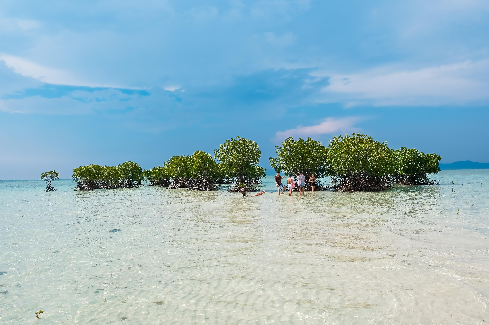

Welcome to Masbate
Masbate is a beautiful island province in the Philippines known for its stunning beaches, rich marine life, and unique cowboy culture. It offers a peaceful escape with natural beauty, making it a perfect destination for travelers seeking adventure and relaxation.


The Buntod Sandbar & Marine Sanctuary is one of the most popular attractions in Masbate, known for its long stretch of white sand surrounded by clear, shallow waters. It is a protected marine area, making it an excellent spot for snorkeling where visitors can see colorful fish and healthy coral reefs. The sandbar also features a mangrove forest with a wooden boardwalk, offering a peaceful place to walk and enjoy nature.